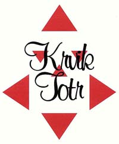

|
až si to dočtete, račte se vrátit |
|
Rozhovor s Krvik Totr
Petr Novotný a Tomáš Kout sedí v kavárně Slávie a jsou rozhodnuti provést se mnou rozhovor. Poté si ale berou mé připravené otázky a odcházejí neznámo kam. Po několika měsících mi rozhovor přichází sám od sebe mailem... |
 |
1. Proč vlastně
děláte všechno to, co děláte (píšete, hrajete, zpíváte, skládáte...)?
PN:
Prostě proto!
TK: Protože musíme.
PN:
Co bychom dělali jinýho, že jo.
TK: No jasně, protože musíme. Jako z vnitřního musu, ne že by nám to ňákej imperativ kázal... Vlastně jo, imperativ vnitřní nám to káže.
PN (smích): Tak na tohle nemám slov. Co k tomu mám jako dodat? Já
už bych k tomu snad jen - já nevim, co bych ještě... -
TK:
Jako z toho přetlaku, jak se to vždycky říká... Protože nám to nedá. Nedá
nám to nedat se do toho. Ale baví nás to. Je to záliba - koníček přerostlej
do... do... Co vono to vlastně je?
Koníček přerostlej v soustavnou amatérskou činnost na poli literárně divadelním, kteréžto pole zovu autorským divadlem.
PN (nádech na vážný monolog): Je to hrozně divný se nad tím
zamyslet. My to vlastně neděláme nějak vědomě nutnostně - je to zažitý
zvyk se spolu vídat a něco podnikat. Poznali jsme se na základce, známe se už
skoro třicet let (přesněji to je něco kolem 16 let společně strávených),
a tehdy jsme se v socialistické nudě zabavovali podnikáním různých
klukovských spolků s jediným programem: organizovanou ilegální činností,
to nás děsně bavilo. Lezli jsme po skalách a hráli si na partyzáni - po převratu
jsme hráli úplně tu samou hru, ale partyzány nahradili komunisti. To jsme
pak rozvinuli založením ilegálního státu Svrchované Vokovice (v kteréžto
nejvýznamnější pražské čtvrti já žiju), samozřejmě měl komunistickou
strukturu, vlastní ústavu, ve které šlo pouze o to, jak namastit kapsu hlavním
představitelům (budoucím Krvik Totr) "Vokovickými Penězi" a jak
nepřijít o koryto. Vokovice měly i propracovanou strukturu MHD - nic
nejezdilo, s výjimkou vládních rikšů... No a když jsme začali na počest
naší nové vlasti zpívat socialistické písně vytáhnuté ze slavného Hercíkova
zpěvníku z 50. let a potom je i nahrávat, Krvik Totr v nejpůvodnější
podobě byli na světě. Potom jsme dál a dál blbli, v přehršli soukromých
rádií počátku 90. let jsme vymysleli vlastní, Naše Rádio, kde jsme to všechno
parodovali, pořád jako kluci, ale pak se to začalo samo od sebe měnit k něčemu
většímu, tím, jak přibývaly vlastní scénky a skeče - a najednou tu jsme
v plné krvikototrské kráse, ty srandy zcela vážně píšeme, hrajeme,
zpíváme skládáme, a ty se nás ptáš, proč... No prostě proto.
2. Máte ve skupině
nějak rozdělené role? Kdo z vás je Laurel a kdo je Hardy? Kdo je
Voskovec a kdo Werich? Kdo je taťka a kdo mamka?
PN: No tak na to je jednoduchá odpověď - ten chytřejší z těch dvojic jsem vždycky já...
TK:
Ano, já jsem Kout a von je Novotný. Von je rejža a dělá všechno, já jsem
Kout a dělám průsery. Ale jináč, já jsem mamka a Petr je taťka. Von je
hubenej a taky tvrdej.
PN:
Zvláště, když do mě někdo kousne nebo praští, tak jsem takovej kostnatej.
Jenže já si nemyslím, že by mamka byl Tomáš a taťka já.
TK:
Na jevišti jo! Ale v pozadí jsem mamka já, protože já vyšívám hedvábné
kapesníčky.
PN: Kdežto já chodim do hospody na pivo.
TK:
Ty vyděláváš, děláš všechnu tu dřinu - a já doma tak jako...
PN: Prudíš.
TK: Tak to je v zákulisí, ale na jevišti je to naopak.
PN:
Než začal Tomáš mutovat, hrál mamku a všechny ženský role on, teď je
tomu naopak - zhrubl a mě nechal ve výškách, ve kterých mi nezbývá nic
jiného než být "taťkovi Tomášovi" oporou a lepší polovičkou...
Ale právě proto, že jsou všechny dvojice takhle jednoduše a navěky rozdělovány
na mamku-taťku, snažíme se to pravidelně otáčet - a kupodivu s pochopením
publika.
Ale jinak - tělesně se moc nelišíme, až na to, že mně příroda zapomněla připlácnout k tělu nějaký to maso, takže úplně normální Tomáš vypadá vedle mě absurdně otyle, to ale neznamená, že jsme Laurel & Hardy. Naše cvokárny navíc nejsou tak otevřeně pochopitelné, byť ta sebeblbost L+H se v nich vždycky objeví, ovšem ne v prvním plánu. Voskovec-Werich, no, to bych řekl, že obojí je Tomáš, protože je děsně žere, se zápalem až skoro životopiseckým.
3. Považujete někoho za vlastní předchůdce? Cítíte se být následovníky
nějakého uměleckého směru? Kdybyste se měli pojmenovat jako nějaký (třeba
vlastní) -ismus, jaký by to byl?
PN:
Předchůdci, které následujeme? (Odkašle
si) Tři čtyři -
OBA (unisono): Voskovec/Werich, Suchý/Šlitr, Šimek/Grossmann, Lasica/Satinský, Smoljak/Svěrák, a ze všeho nejvíc Kaiser/Lábus...
PN:
Kaiser/Lábus jsou ty jediný opravdoví předchůdci, protože jsou taky těsně
před námi.
TK:
To je pravda. K těm ostatním jsme přišli mnohem později. No a ty ismy...
(Odkašle si) Tři čtyři -
Oba (unisono): Voskovec-Werichismus, Šimek-Grossmannismus, Svěrák-Smoljakismus,
Kaiser-Lábusismus...
PN: No a ještě něco jako... socialismus! Ten nás taky hodně ovlivnil.
TK: Ten nás odkojil.
PN: To byla naše matka - naše vlast.
TK: No a pak veškerý ty musy, co musíme!
PN:
A ještě kubismus! Protože všechno, co píšeme, je pak vždycky rozházený
stejně jako v kubismu. Takže v podstatě jsme kubisti.
TK: No ale pozor, komunismus nás taky ovlivnil, projevy a tydlecty šílenosti.
PN:
A husiti! ještě husiti nás hodně ovlivnili.
TK: Husismus.
PN:
Husiti, všechno na stůl - demokracie ve skupině.
TK:
To je vlastně kolektivismus.
PN:
Kolektivismus - já všechno udělám a vy -
TK:
A my to kolektivně shrábnem.
PN: Tak ale teď to zkusíme vážně. Z ismů to bude nejvíc surrealismus.
TK: Kdysi zaznělo novotnismus-koutismus, kterým jsme překonali marxismus-leninismus, a i když se to týkalo jiné oblasti našeho konání, patrně je to i ten náš -ismus. Ale jinak už mě napadá jen antimarasmus. Ale to není ismus, že?
PN:
No tak je to náš -asmus. A ještě máme -ama a -ada, jako absurdní drama a
hlavně dada, protože my vždycky v našich textech rozložíme realitu na
prvočísla a pak je picassovsky poskládáme úplně jinak. Kulatý čtverec.
4. Hádáte se?
Jak řešíte umělecké a jak osobní spory?
TK: Hádáme se.
PN:
Ne, počkej, já myslím, že se nehádáme.
TK: Já myslím, že se hádáme.
PN: Já myslím, že se nehádáme.
TK:
Neser mě!
TK:
No, asi takhle se hádáme pořád.
PN:
To byl ukázkový příklad toho, jak se nehádáme.
TK: To byla ukázka toho, jak se hádáme.
PN: A nejhorší je, když musí jeden ustoupit!
TK: To je nejhorší, no.
PN:
A většinou to je Tomáš.
TK:
No, právě.
PN:
Ale pak jsem to taky někdy já. A to je mnohem horší...
TK: Protože se už učím, jak on to dělá. Za těch 16 let jsem ho už trochu prokoukl...
PN:
To je fakt, když je nejhůř, Tomáš mi šlápne na brejle...
TK: Prostě se nehádáme vůbec, ale zato pořád. Osobní spory řešíme osobně, umělecké neosobně, ovšem o to vášnivěji. Kdesi Lasica hovoril o tom, že takáto dvojica je cosi ako manželstvo. A zdravý partnerský vztah bez hádek není zdravý. Krom toho jsme každý jiný, takže se občas střetáváme o prkotiny, ale nikterak mimo meze. Navíc oproti manželství máme tu výhodu, že když prásknou dveře a jeden se jde ožrat, ten druhej jde s ním, a hádáme se dál, ovšem o to, co budeme pít.
PN:
Když přijde okamžik, ve kterém se v našem společném psaní naprosto
rozejdeme v řešení, hádáme se do krve. Ty hádky jsou nejen o věty,
ale i o slovíčka. A osobní spory - no, fakt je, že my vlastně žádný nemáme:
to už je horší než to Lasicovo manželstvo, my jsme prostě tak nějak
srostlí, čímž trpí celé naše okolí, zvláště ty drahé polovičky,
kterým neustále mizíme (a které trpí o to víc, že vědí, KAM mizíme...),
takže hádky jsou u nás spíše otevřenými diskusemi, ze kterých vyjde určitý
vyprecizovaný názor - a pokud jde o něco jako ponorka, tu zažíváme výhradně
krz dlouhou práci. Jenže bezprostředně po dokončení díla ji totálně
prolijeme mnohaprocentními potoky patoků...
5. Chcete být
slavní? Šli byste do televize Nova?
PN: Někdo je skromnej, někdo ne, ale ze všech nakonec vyleze, že slávě se nebráněj - tak proč to skrývat. My už jsme si přiznali dávno (asi tak minulý týden), že chceme být šíleně slavný. Ale ta naše sláva se nám jeví jaksi lokálně. Bejt NĚKDO ve skupině umělců a diváků určitýho víceméně soukromýho, protože právě úplně netelevizního stylu umění či humoru. Takže s tímhle bychom do Novy nešli, protože by nám to ani nenabídli.
TK: Nejsme na to dostatečně masoví, viď hubeňoure?
PN:
Nicméně mám takový osobní sen – (zjihne)
já bych hrozně rád šel do Novy tleskat na Milionáře...
(smích) To je totiž strašný - ty lidi tam jsou buď šťastný, že se
ztrapnili před celou republikou a kusem Slovenska, protože nevědí, co to je
há-dvě-ó, no a těm ovcím za nima stačí dokonce už jen to tleskání a
pak doma - "Hele Máňo, teď jsem tam milisetinu byl, dvacátej šestej
zleva". Nevím, jestli si to pak napíšou na hrob, ale náš cíl je
znamenat něco vlastním dílem, nemít výraz fyzický, ale vnitřně-umělecký
- a to už se nám vlastně daří.
6. Pokoušíte se
o něco i sólově? Jak se každý z vás na sólové projekty těch dalších
dívá?
TK: Ale jó, pokouším se. Dokonce již vícekrát došlo ke spolupráci Novotného s Koutem mimo Krvik Totr. Ale tak, že já spolupracoval na Novotného věci. Já že bych sám něco dělal, na to jsem prostě línej.
PN: No a to strašně kecáš, protože hraješ divadlo, to je tvoje veliký sólo.
TK:
Ale to je jiná záležitost! To neberu jako sólo. Sólový projekty autorský
nemám. K divadlu jsem si sice našel cestu přes psaní, ale je to opravdu jiné,
podílím se na práci jako ostatní a především pracujeme na textech druhých
autorů, a pro mě je zásadní vlastní autorství. Cítím se pořád více
spisovatelem než hercem, básnické střevo mám, o tom už dávno nepochybuju,
ale herecké nadání? To musí posoudit jiní. Baví mě to, ale to není sólová
záležitost, jako to nebyla chemie v době, kdy jsem se jí zabýval (a s upřímným
zájmem).
PN:
U mně je tato otázka velmi vtipná, protože já vždycky tak něco dělal,
psal si, sobě i druhým - a z těch mnoha rozličných činností vzešli
i Krvik Totr - no a nějak mě přerostli... Proto se snažím co nejvíc se od
nich odpoutat, nikoli konkurovat, ale být víc svůj, protože Krvik Totr jsou
věcí dvou lidí. Chci psát něco úplně jiného, nikoli humor, ale něco
hluboce vážného, vážně hlubokého. Ale vůbec to nejde, protože jsem
deset let zakořeněnej v naší srandě. Střetem zájmů pro Krvik Totr může
být divadlo, kterýmu se formou svých scének definitivně přiblížili, a
který zároveň já moc toužím sólově psát a Tomáš na divadle zase
"sólově" hraje. Nicméně řevnivost mezi námi není, možná zdravá
závist nutící toho druhého k větší aktivitě. Vždycky se naše
vlastní věcičky odrazí v ještě lepší společné práci.
TK:
Bať, bať vždycky když poslouchám, co zase napsal, dostávám chutě
zasednout a psát své věci, dokonce někdy dostanu i nápad, jenže jsem línej...
Takže se mi vrší zapsané a nezpracovávané nápady a jen tu a tam něco
vznikne - většinou bezprostředně z pocitu, nejčastěji při cestování MHD.
7. Milujete slovní hříčky, to je jasné od začátku -
co jiného ještě spojuje a dělá vaši poetiku vaší poetikou, co je pro vás
nejcharakterističtější?
TK: Hříčky už dávno nejsou to stěžejní. Dřív to byla hříčka a na ní postavenej text. Teď je to postavenej text vomítnutej hříčkama.
PN:
Oproti minulým letům, kdy byly naše povídky shlukem těchto srandiček, je
to nyní "o něčem jiném". Tahle nová jazyková zrůdnost to ostatně
vystihuje - parodujeme, shazujeme, měníme zažité postupy jazykové, společenské,
žánrové, ale hlavně LOGICKÉ, a to prostřednictvím scének či dialogů,
ve kterých to vše klišovité převracíme vzhůru nohama. Takže hříčkám
jako základu všeho odzvonilo, byť vždycky nějaká zazní. Naše poetika je
tedy "převracet vše naruby".
TK:
Poetika, kterou mám u nás rád, leží pro mě v barvitém nesmyslnu - bezděky
mě napadá text Takový odporný klišé,
kde je plno takových míst. Například (literární) obraz lesa vystupujícího
z moře. A všelijaké takové fantazie, které jsou možné výhradně v naší
představivosti. Jenže už i od toho jsme pryč, teď píšeme divadelně, kde
to stojí na akci, byť nadále akci slovní.
PN: A máme vypěstované vlastní, takzvané "smrtelné klišé", protože v našich "uměleckých vyjádřeních" většinou někdo umře, nejčastěji hlavní postava, podle pravidla, že to se v seriózních dílech stát nesmí...
8. Jaké bylo vaše
nejhorší a jaké nejlepší vystoupení?
PN:
To jestli se večer povedl či ne, nezáleží prakticky vůbec na tom, jestli nás
publikum přijalo a pochopilo. Jsme tak podivně jiní, že jsme se rozhodli
nedepkařit a být nad věcí, necítit nepřijetí jako svoji chybu. Takže
nejhorší vystoupení byla pouze ta, na která jsme se nedostatečně připravili
- respektive vyflákli. I naše omezená produkce potřebuje až nechutně
profesionální a četné zkoušky... A když pak takovéhle nadrcené představení
předvedeme a diváci mají dojem spontaneity a improvizace (s čímž za námi
občas chodí), máme jen a jen radost. Nejlepší vystoupení jsou tedy skoro všechna.
Zajímavostí je, jaké různé skupiny nás přijaly: děti, puberťáci, střední
věk, důchodci, ale také bezdomovci a opilci, tělesně postižení lidé (ti
dokonce tu naši "jinou realitu" ocenili nejvíce, asi protože v ní
sami tráví všechen svůj čas), metaláci a dokonce intelektuálové...! A
nutno říci, že vyloženě negativní zkušeností jsme si ještě neprošli -
a strašně se toho bojíme.
TK: Úplně nejlepší je vždycky naše vystoupení na festivalu v Mnichovicích (právě pro ty postižené), tam je nejvděčnější publikum. Ti nejspřízněnější jedinci ze všech ostatních vystoupení si tam snad dávaj sraz.
9. Bojíte se mezi
lidi nebo trému zvládáte bez problému?
TK:
Tréma před vystoupením je nepřímo úměrná počtu přítomných známých
v hledišti - čím víc kamarádů, tím je nám líp. Tréma před vystoupením
je ale dvojí - tréma účinkujícího a tréma
autorská, ta je tam navíc (oproti normálnímu divadělání). Mám pocit,
že tu autorskou prožívám silněji, a nejen díky otrkání na herecké škole.
Nejvýraznější trému pozoruji v okamžicích (a nemyslím teď pouze sebe),
kdy herec jde na trh se svými výplody - ať jsou to mluvní cvičení nebo přiblblé
referáty anebo veliké drama. Lidi, kteří jinak na jevišti bez ostychu tančí
či zpívají, náhle nevědí, co s rukama antnp.
PN: Já se pořád učím se nebát, moc mi to nejde - na pódiu ale to snad znát není, jde jen o ten okamžik tam před ty vyvalený bulvy vstoupit. Tomáš mi ale moc pomohl myšlenkou, že se nemám čeho bát, protože bát by se mělo publikum... (Nebo to řekl Einstein?) Nicméně je mezi námi veliký rozdíl: když všechno dopadne dobře, já mám strašlivou touhu oslavovat, ale nejraději jen s Tomášem, nebo s těmi, kdo tam nahoře byli s námi. Z lidí mám radost na začátku, během vystoupení, ale pak se jim strašně straním, mám takovej divnej pocit, nedokážu unést to, čemu se říká úspěch či popularita. Nejhorší je, když za mnou někdo přijde a plácá mě po zádech, to vážně nevím, co mám dělat - nejraději bych se zdejchnul anebo propadl. A Tomáš naopak. Vlítne tam jak Kerouac a za chvíli se zná se všema.
10. Jak často se
vídáte a kolik práce průměrně Krvik Totr věnujete?
TK: Tak na číslíčka je tady rejža. Vídáme se rádi, a tedy jak jen to jde. Společného času věnujeme na Krvik Totr podle mého soudu tolik jako Petr ještě sám na tutéž činnost. Ale já jsem línej, takže sám nic.
PN: Dejme tomu, že průměrně píšeme tak dvacetkrát-třicetkrát do roka. Na jedno vystoupení věnujeme pět-deset zkoušek. Na nahrání a zmixování desky padne měsíc-dva. Pak je tu velice významná položka - chlastání. T